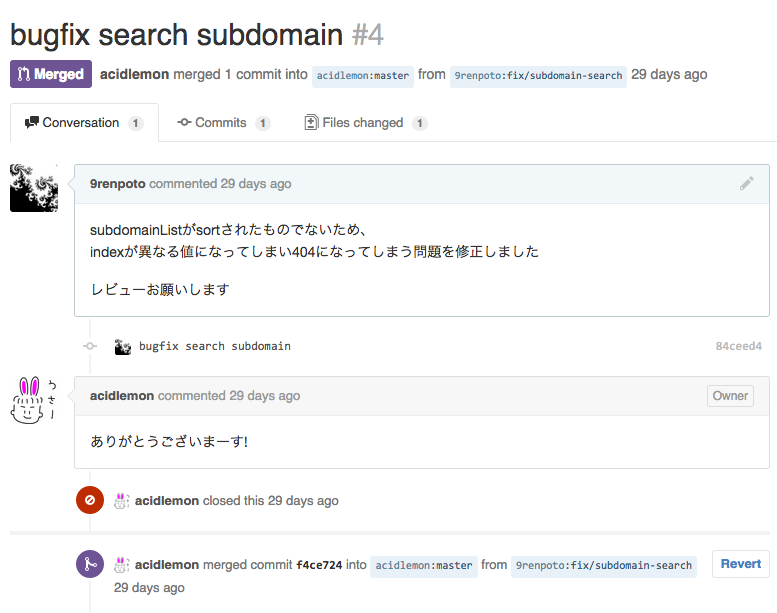

TL;DR
Web Service????
- Setup OS...
- Install_Middleware
- Coding
- Network
- ...Test
- Deploy...
＿＿＿_ ━┓ ／ ― ＼ ┏┛ ／ノ ( ●) ＼ ・ ｜ ( ●) ⌒） | ｜ （__ノ￣ / ｜ / ＼＿ ⊂ヽ∩＼ /´ (,＿ ＼.＼ | / ＼＿ﾉ) ) )
 PaaS?
PaaS?commit, push
出来るくらいならエンジニア
出来るくらいならエンジニア
github.com/acidlemon/mirage
mirage is reverse proxy for docker container and container manager.( config.yml )
host:
webapi: docker.192.168.33.33.xip.io
reverse_proxy_suffix: .192.168.33.33.xip.io
listen:
foreign_address: 127.0.0.1
http:
- listen: 8080
target: 5000
bitbucket.org/9renpoto/test-view-app
- 1.web formからテンプレートをPOST
- 2.アプリが自らをclone, 変更, commit, push
- 3.mirageのAPIを呼び出す
- 4.dockerが起きる
bitbucket.org/9renpoto/test-view-app
Dockerfiledocker_run.sh
RUN curl -kL https://raw.github.com/pypa/pip/master/contrib/get-pip.py | /home/app/local/python-2.7.9/bin/python RUN /home/app/local/python-2.7.9/bin/pip install -r requirements.txt CMD /bin/sh /home/app/test-view-app/docker/docker_run.sh
#!/bin/sh set -e PATH=/home/app/local/python-2.7.9/bin:$PATH git fetch git checkout $GIT_BRANCH git pull pip install -r requirements.txt python myapp.py

 Happy Hacking!
Happy Hacking!